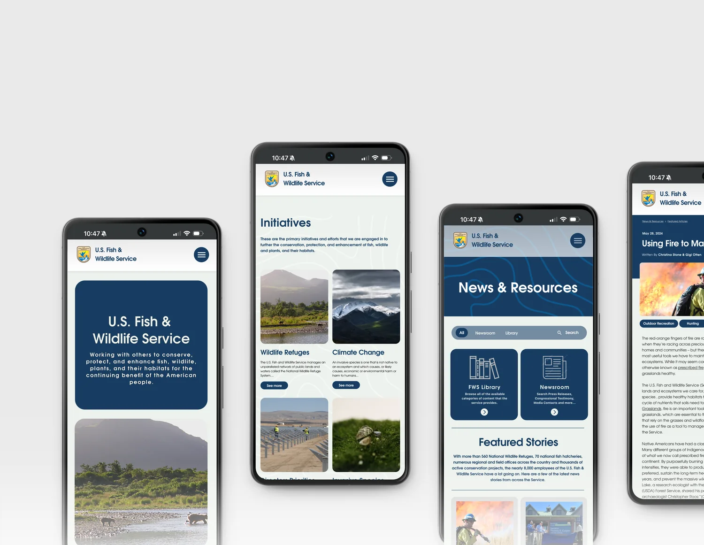
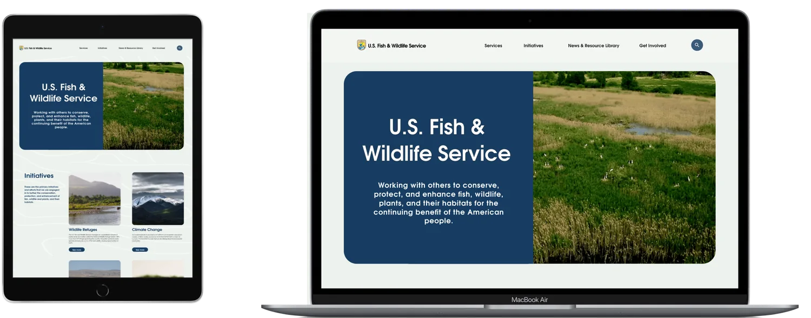
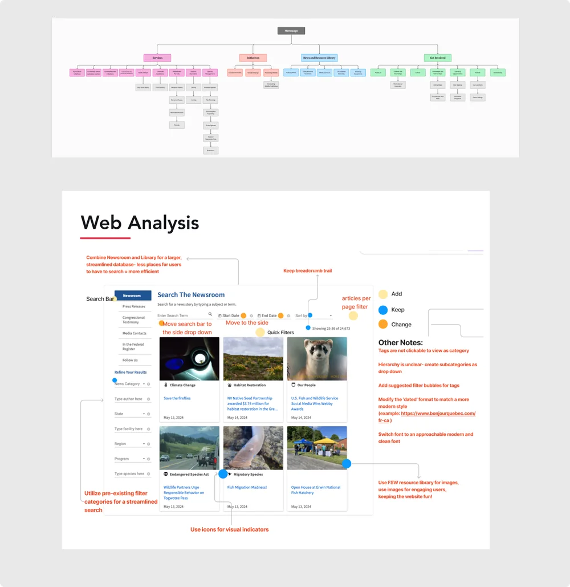
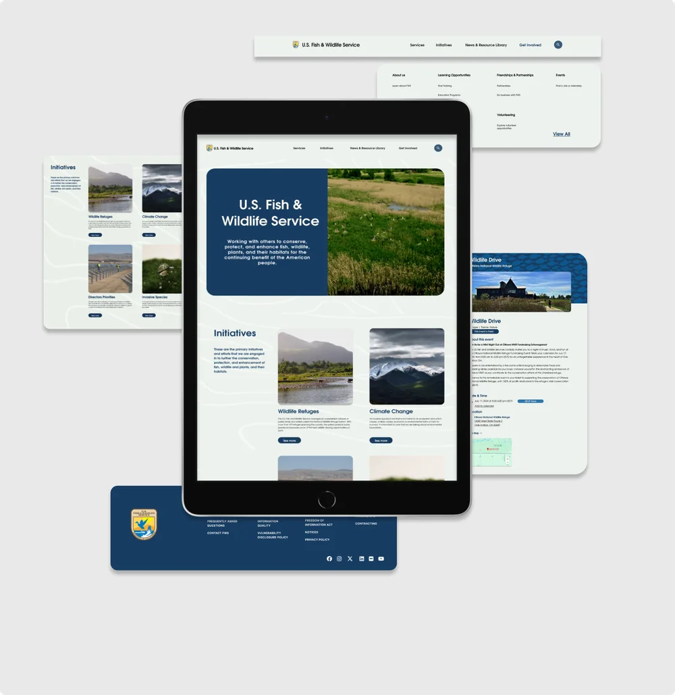
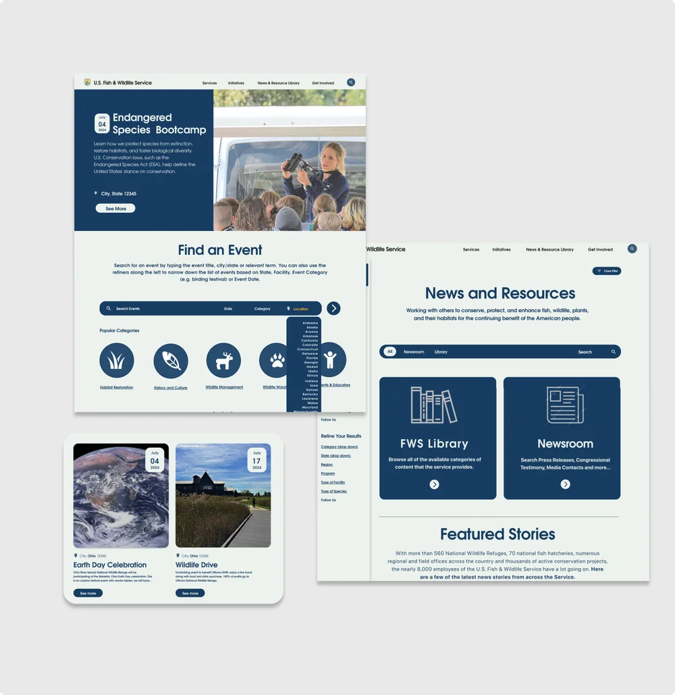
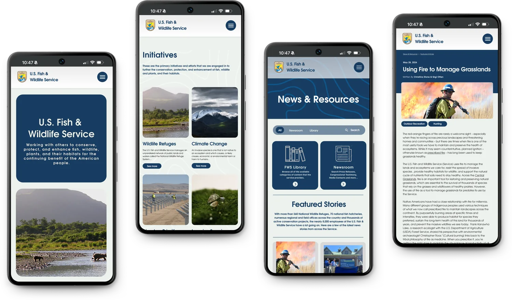
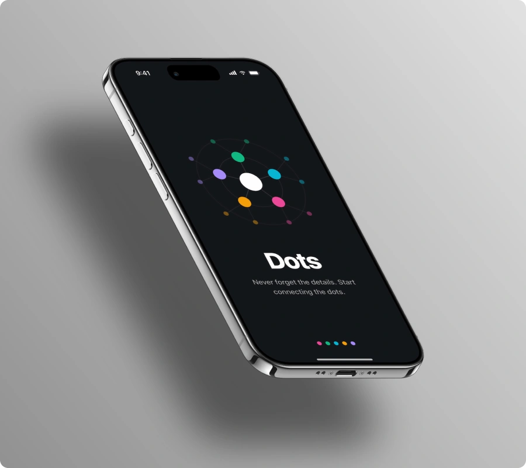

U.S. Fish & Wildlife Service
Govt. Website RedesignThe U.S. Fish and Wildlife Service (USFWS) website hosts a massive archive of data, but its complex navigation creates a high barrier to entry for everyday users. The goal of this project was to restructure the site's information architecture and deliver a clean, modern UI that helps users find critical information and services with minimal friction.

53%
Success rate for completing tasks on the original site. Most users were able to find the specified article but struggled using the navigation to locate the desired event.
98%
Success rate of the user tasks when given the redesigned site, which focused on improving article search and event filters.

User Research
Our comprehensive user research included developing personas and storyboards, conducting surveys, performing heuristic evaluations, and conducting a web and navigation analysis. We used card sorting to create a sitemap, developed UI style tiles for mobile and web, mapped user flows, conducted usability tests, and proceeded with mobile and website redesigns. The process culminated in detailed next steps and reflections.
Qualitative User Testing
For our research, we began by analyzing the current FWS site using LATCH principles. Through preliminary user testing we uncovered pain points that arose when performing tasks on the current site. After creating user personas we designed a task flow diagram that fit their respective backgrounds. This research, centered around improving information architecture for way-finding and strategic placing of the government services for the users, informed our final design for the new site.

Solving for a Choppy Design Flow
During A/B testing, users preferred a design with color-blocking sections. Users stated that design B was more easily accessible and information seemed organized in a more approachable way.
Scalable Design System
Designed a scalable UI system that brought consistency to FWS.gov while modernizing the user experience. By simplifying the visual hierarchy and standardizing components, the redesign made complex information easier to navigate without compromising the agency's trusted identity.

Addressing Usability Issues
Research uncovered that the existing events and news filtering experience made content difficult to find. We restructured the filter system to prioritize discoverability, enabling users to navigate content faster and more intuitively.

